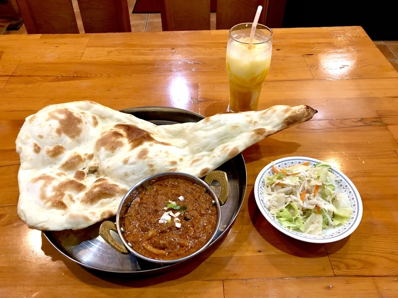

日本語
I'll tell you!
Nice place in
Takizawa
and
Morioka
Name of a store：本場インド料理店ダージリン盛岡
A word of advice: visit with your family and friends and have a good time!

URL
本場インド料理店ダージリン盛岡Home Page
by Mituo kobayashi
return